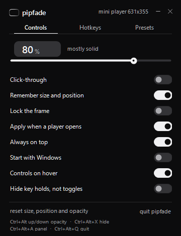
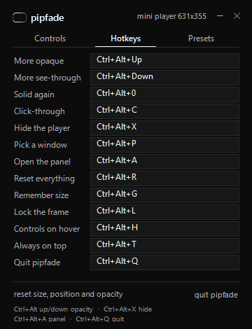
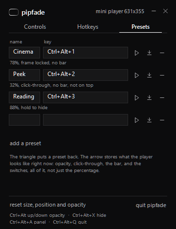

There is no installer and nothing to sign up for. Copy the folder
anywhere you like, run Start pipfade.vbs, and it lives in
the notification area. It writes Start pipfade.lnk beside
itself on that first run, carrying the app's own icon, which is the one
to double-click from then on. Windows may warn about running a script
you downloaded; the whole thing is a single readable
.ps1 file.
Features
What it does to the player, and what it leaves alone.
The player
- Opacity: any value down to 16%, from the panel, the hover bar, or a hotkey
- Type an exact number: click the percentage and enter it, in either place
- Remember size and position: per player, not per app
- Apply on open: a new player arrives already at your opacity
- Always on top: keeps the player above fullscreen apps
- Frame lock: puts the player back if something moves it
- Resizable window: drag any edge or corner, and the size is remembered
The hover bar
- Fades in along the player's top edge when you point at it
- Percentage, a slider, then click-through, panel, lock and quit
- Never takes focus, so video and hotkeys keep working
- Sizes itself down to fit a narrow portrait player
- Fades with the player instead of staying a bright stripe
Keys and presets
- 13 hotkeys, all rebindable from the panel
- Bindings are recorded, never typed, so one cannot fail to parse
- Four preset slots, each with an optional shortcut
- A preset stores every switch, not just the opacity
Behaviour
- Detects a new player from a window event, not a poll
- Picks up players that were already open when it started
- System tray icon with the same actions
- Tells Windows it is its own app, so it gets its own taskbar button
- Survives an Explorer restart: the tray icon comes back by itself
What it looks like
Three tabs, one window, drawn to stay out of the way of the video. Resize it like any other window - the contents keep a readable column in the middle, except on the Hotkeys tab, where the extra width goes into the binding boxes so a long combination reads in full.



Download
The whole app is one script and a handful of launchers.
| File | What it is |
|---|---|
pipfade.ps1 |
The app. Everything is in here, including the drawing. |
Start pipfade.vbs |
The one to double-click the first time: no console flash. |
Start pipfade.lnk |
Written beside the script on first run. Carries pipfade's own icon, so use this from then on. |
Restore mini player.cmd |
Puts every player back to normal and clears the saved settings. |
Default hotkeys
All of them work with the panel closed, and all of them can be changed.
| Keys | Action |
|---|---|
| Ctrl+Alt+Up | More opaque |
| Ctrl+Alt+Down | More see-through |
| Ctrl+Alt+0 | Solid again |
| Ctrl+Alt+C | Toggle click-through |
| Ctrl+Alt+X | Hide the player |
| Ctrl+Alt+G | Toggle remember size and position |
| Ctrl+Alt+L | Lock the frame where it is |
| Ctrl+Alt+H | Toggle the hover controls |
| Ctrl+Alt+T | Toggle always on top |
| Ctrl+Alt+A | Open the panel |
| Ctrl+Alt+P | Pick the window under the cursor |
| Ctrl+Alt+R | Reset everything |
| Ctrl+Alt+Q | Quit and restore the player |
| Ctrl+Alt+1…4 | Apply a saved preset |
A key pressed without Ctrl or Alt is refused, because a bare letter would be swallowed system-wide. Press Backspace while recording to clear a binding, or Escape to leave it as it was.
Keypad keys cannot take Shift while NumLock is on. Windows turns a keypad digit plus Shift into the arrow key before any program sees it, so the shortcut would register and then never fire. pipfade says so and keeps waiting instead of storing it: turn NumLock off and the same combination works.
Running it
Windows PowerShell 5.1 or newer. Nothing else to install.
Start it hidden in the tray
powershell -NoProfile -ExecutionPolicy Bypass -File .\pipfade.ps1 -TrayStart it and open the panel
powershell -NoProfile -ExecutionPolicy Bypass -File .\pipfade.ps1See what it can find
.\pipfade.ps1 -ListPut everything back and exit
.\pipfade.ps1 -Reset
-Alpha 170 sets the opacity and exits; -Hwnd 0x1A2B3C
targets one window by handle. If a player is ever missed, hover over it and
press Ctrl+Alt+P. pipfade checks that the
window you picked really is a mini player, so pointing at the wrong thing
cannot make an ordinary window see-through.
Settings locations
Next to the script, so the folder is the install.
| Item | Path |
|---|---|
| Settings | pipfade.config.json, next to the script |
| Icon | pipfade.ico, rewritten on every start |
| Launcher | Start pipfade.lnk, rewritten on every start |
| Autostart entry | HKCU\...\Run, only when Start with Windows is on |
Delete pipfade.config.json to start fresh. An older file that is
missing a newer key is upgraded in place: unknown keys keep their default and
your existing settings are left alone.
What it cannot do
Worth saying plainly, because the alternative is a support thread.
A lock is not a wall
- Nothing outside a program can stop that program moving its own window.
- What the frame lock does is put the player back the moment it moves, which from your side looks like the frame refusing to budge.
- It is per window, so two players are two separate locked layouts.
Exclusive fullscreen
- Always on top wins inside the normal window stack.
- A game in exclusive fullscreen owns the display and cannot be drawn over by any normal window.
- Use its borderless-windowed mode instead.
Not fully invisible
- The floor is about 16% on purpose.
- A window you cannot see is a window you cannot grab again.
Windows only
- It is built on window styles, DWM attributes and WinForms.
- pipfade never touches a window of its own, so the panel and the bar cannot be faded by accident.
AI assistance disclosure
You deserve to know how the software you run was made.
Design decisions, code, docs and the drawing code have been produced or reviewed with AI assistance, under human direction and review. The project is not an official product of any AI company and is not endorsed by or affiliated with any model provider.
AI-assisted code can contain mistakes a human would not have made. Testing and a deliberately small surface reduce that risk but cannot eliminate it. If AI-assisted code is a problem for your use case, please don't run it.